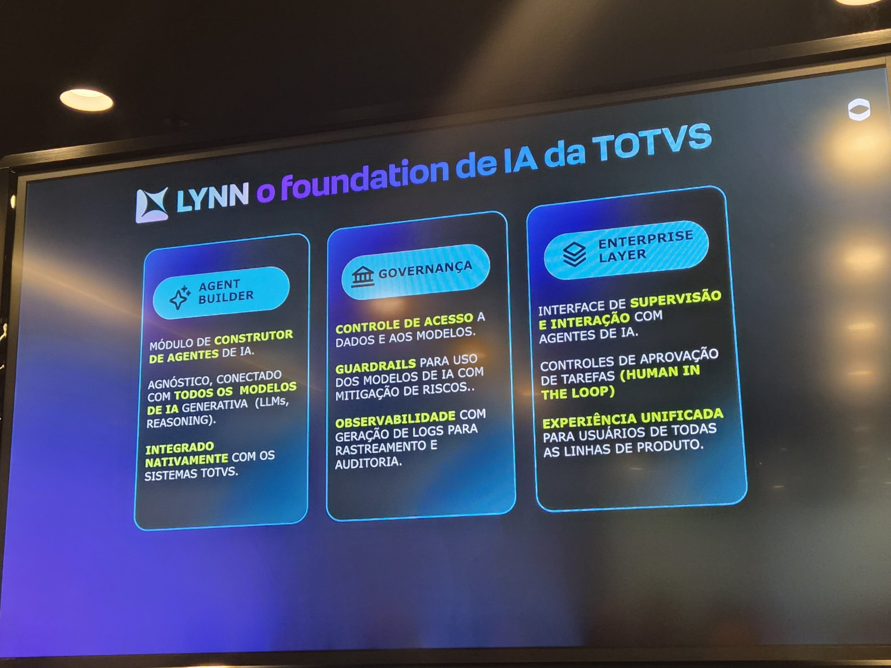
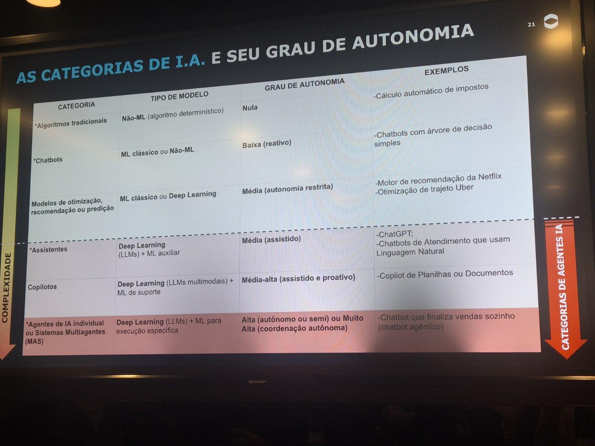
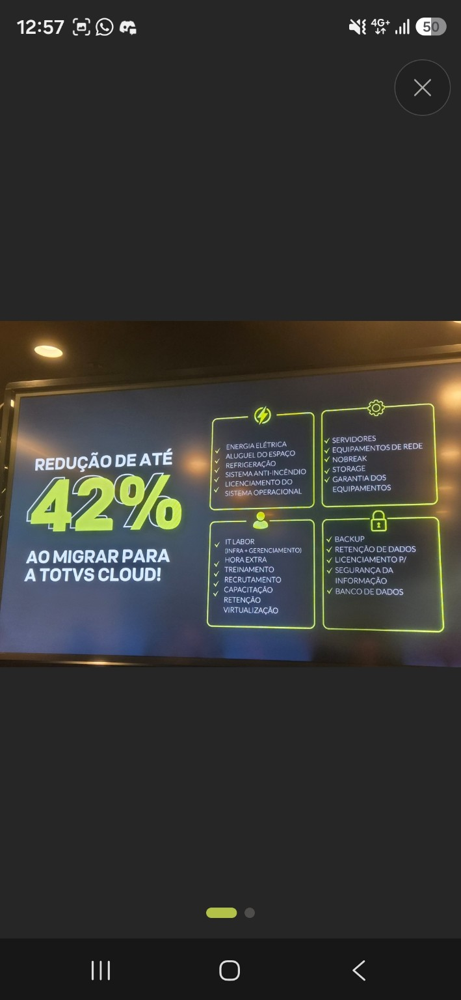
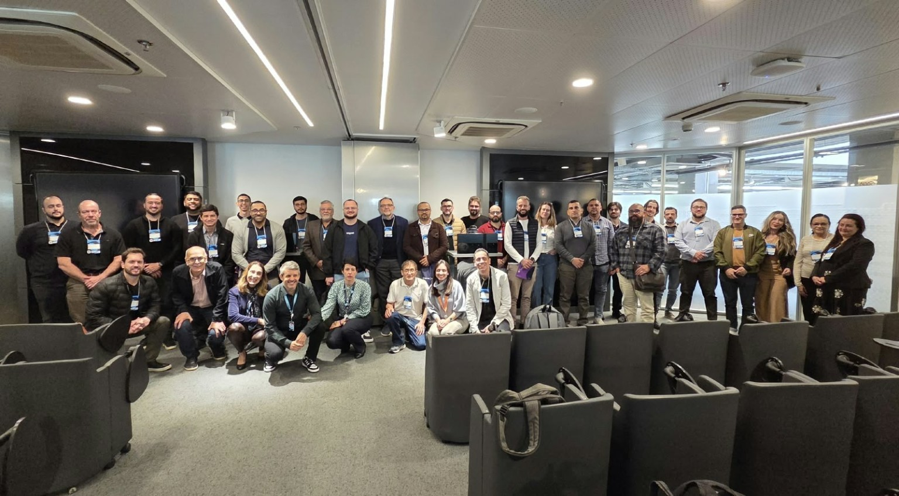
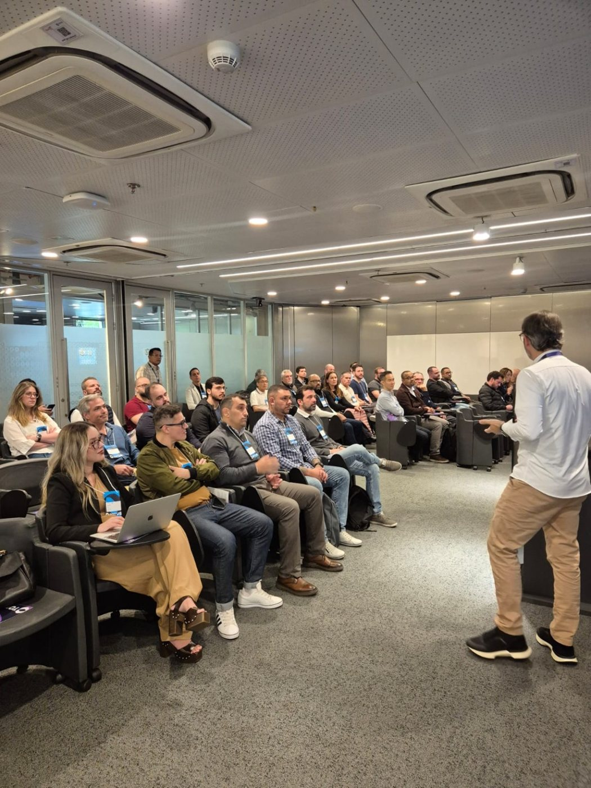
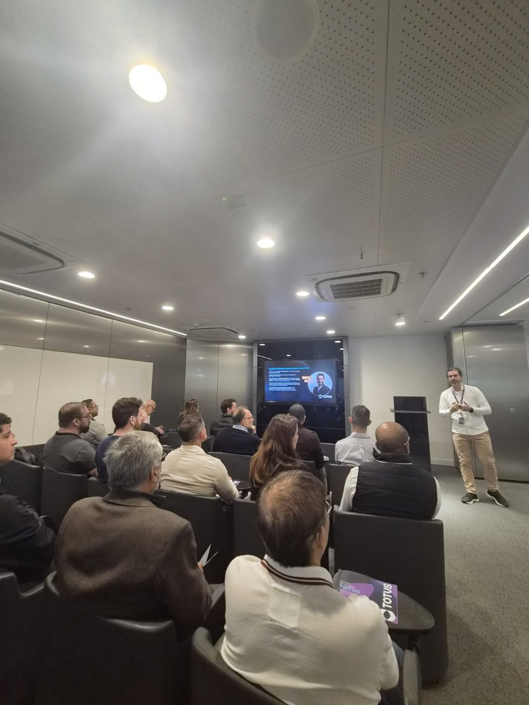
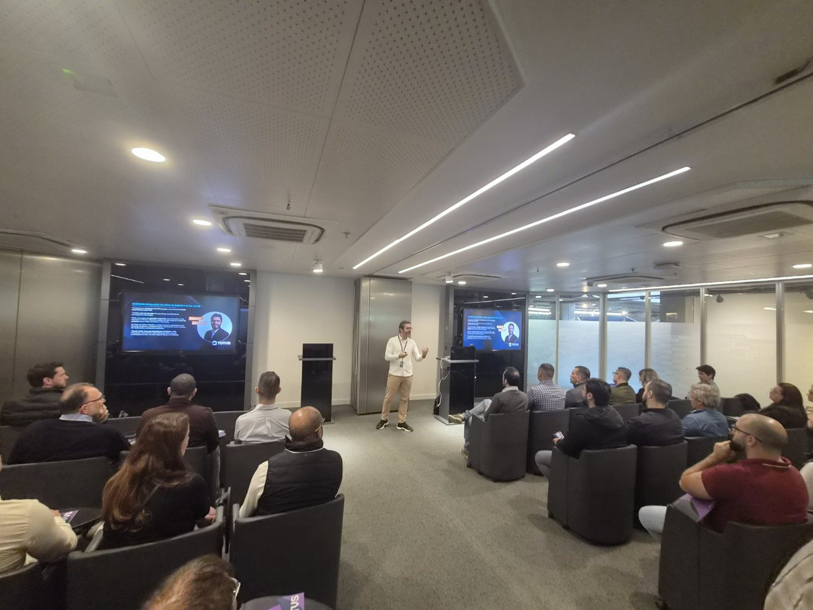

Comece pelo caso de uso
Encontre o gargalo operacional ou comercial antes de escolher a tecnologia. Defina o resultado esperado e como medi-lo.
Reunimos os principais insights do Workshop — IA nos Produtos TOTVS em um só lugar. Relembre as apresentações e descubra caminhos para levar inteligência artificial à sua operação.
Da estratégia à execução, passando por vendas e infraestrutura: navegue pelos temas apresentados no workshop.
A transformação não começa pela tecnologia. Começa identificando o problema de negócio, organizando os dados e medindo impacto.

Rotinas financeiras como validação de títulos, classificação de notas, geração de borderôs e remessas bancárias; também foram demonstrados usos de análise de imagens. O ponto de partida recomendado é avaliar a dor e o ROI, não criar agentes indiscriminadamente.
O Protheus continua responsável pelas regras e cálculos críticos. A inteligência artificial acrescenta contexto, linguagem natural e capacidade de agir seguindo políticas de negócio.

Processos documentados, políticas claras, dados consistentes e critérios de aprovação humana. O workshop também mencionou um modelo de consumo por créditos TCOINS, com regras comerciais ainda sujeitas à definição.
Informações valiosas ficam espalhadas entre reuniões, WhatsApp e e-mails. A proposta é reuni-las, gerar contexto e ajudar equipes comerciais a vender melhor — sem depender de preenchimento manual do CRM.
Escolher um fluxo de maior impacto — por exemplo, registrar reuniões de discovery ou automatizar próximos passos no CRM — e expandir gradualmente para análise da carteira, coaching comercial e previsão de negócios. O módulo Lead Data foi apresentado com lançamento previsto para fevereiro de 2027.
Agentes inteligentes exigem infraestrutura, disponibilidade, segurança e governança. A TOTVS Cloud foi apresentada como uma nuvem especializada nos produtos TOTVS, com o T-Cloud apoiando a operação e a gestão do ambiente.

Fazer um diagnóstico do ambiente atual, comparar TCO, revisar requisitos de segurança e soberania de dados e avaliar compatibilidade dos produtos e versões antes da adoção de novos agentes.
Alguns momentos do Workshop — IA nos Produtos TOTVS, realizado em 10 de novembro de 2026.




Os temas foram diferentes, mas apontaram para uma mesma direção: inteligência artificial que resolve problemas reais, integrada a processos e governança.
Encontre o gargalo operacional ou comercial antes de escolher a tecnologia. Defina o resultado esperado e como medi-lo.
Documentação, integração com sistemas e regras claras são essenciais para que assistentes e agentes sejam confiáveis.
Segurança, supervisão humana, custos e infraestrutura precisam acompanhar cada nova automação.
Conte qual dos quatro temas faz mais sentido para sua operação. A TOTVS Paulista poderá aprofundar a conversa com você.